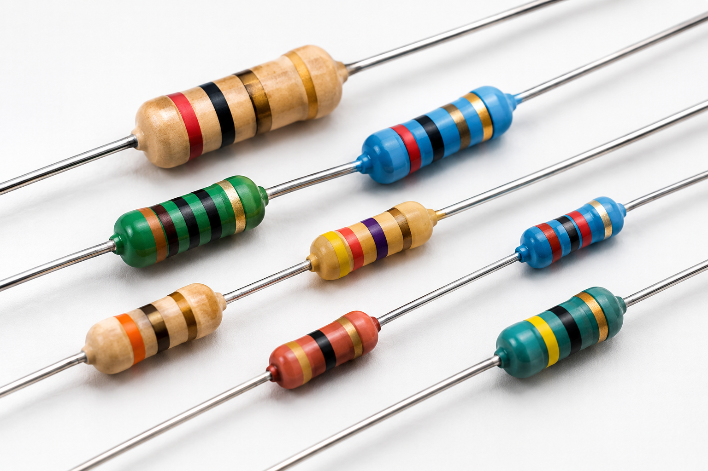

Resistores e a Lei de Ohm
Estudo completo sobre o controle da corrente elétrica, dimensionamento e cálculo de circuitos.
1. Introdução
Imagine conectar um LED sensível diretamente a uma bateria de alta voltagem: ele queimaria instantaneamente. Na eletrônica, para evitar que componentes sensíveis sejam destruídos pelo excesso de corrente elétrica, usamos os resistores.
Eles funcionam como "freios" para a eletricidade, limitando a quantidade de elétrons que passa pelo circuito e garantindo que cada peça receba exatamente a energia de que precisa para funcionar com segurança.
2. O que é Resistência Elétrica?
A resistência elétrica (R) mede a oposição física de um material ao fluxo de carga elétrica. A sua unidade de medida no Sistema Internacional é o Ohm (Ω).
3. Primeira Lei de Ohm
Formulada por Georg Simon Ohm, estabelece a relação direta entre Tensão (V), Corrente (I) e Resistência (R):
V = I × R
Medida em Volts (V)
Medida em Ampères (A)
Medida em Ohms (Ω)
Fórmulas derivadas: Corrente: I = V / R | Resistência: R = V / I
4. Segunda Lei de Ohm
Explica como a geometria e o material de um condutor determinam a sua resistência:
R = ρ × (L / A)
- Comprimento (L): Quanto mais longo o fio, maior a resistência.
- Área da Seção (A): Quanto mais grosso o fio, menor a resistência.
- Resistividade (ρ): Propriedade específica do material (ex: cobre, alumínio, ouro).
5. Potência e Efeito Joule
O atrito dos elétrons ao atravessarem o resistor transforma energia elétrica em calor, fenômeno conhecido como Efeito Joule.
A potência dissipada em calor (P), em Watts (W), é calculada por: P = V × I ou P = I² × R.
6. Tabela do Código de Cores
Tabela utilizada para identificar os valores nominais de resistores de leitora direta:
| Cor | 1º Dígito | 2º Dígito | Multiplicador | Tolerância |
|---|---|---|---|---|
| Preto | 0 | 0 | × 1 | — |
| Castanho | 1 | 1 | × 10 | ± 1% |
| Vermelho | 2 | 2 | × 100 | ± 2% |
| Laranja | 3 | 3 | × 1.000 | — |
| Amarelo | 4 | 4 | × 10.000 | — |
| Verde | 5 | 5 | × 100.000 | ± 0.5% |
| Azul | 6 | 6 | × 1.000.000 | ± 0.25% |
| Violeta | 7 | 7 | × 10.000.000 | ± 0.10% |
| Dourado | — | — | × 0.1 | ± 5% |
| Prateado | — | — | × 0.01 | ± 10% |
7. Exemplos Práticos
Exemplo 1: Resistor Limitador para LED
Um LED exige 2 V e 0,02 A. Para conectá-lo a uma bateria de 9 V:
- Tensão sobre o resistor: V_R = 9 V - 2 V = 7 V
- Resistência: R = 7 V / 0,02 A = 350 Ω (Adota-se o valor comercial de 360 Ω).
Exemplo 2: Chuveiro Elétrico
No inverno, o seletor do chuveiro reduz o tamanho útil do fio resistivo. Com menor comprimento (L), a resistência (R) cai, fazendo passar mais corrente elétrica e gerando mais calor por Efeito Joule.
8. Recursos Visuais
Esquemas visuais e diagramas explicativos do módulo:

.png)
.png)
9. Curiosidades e Aplicações
- Sensor LDR: Resistor que altera sua resistência de acordo com a luz solar, utilizado em iluminação pública.
- Supercondutividade: Em temperaturas extremamente baixas, certos condutores possuem resistência zero (R = 0).
10. Resumo para o Caderno
📌 Anote no seu caderno:
- Resistor: Componente passivo que limita a corrente e transforma energia elétrica em calor (Efeito Joule).
- 1ª Lei de Ohm: V = I × R
- 2ª Lei de Ohm: R = ρ × (L / A) (Fio mais longo = mais resistência; Fio mais grosso = menos resistência).
11. Quiz Interativo
12. Referências
- SADIKU, Matthew N. O. Fundamentos de Circuitos Elétricos. 2017.
- BOYLESTAD, Robert L. Introdução à Análise de Circuitos. 2012.